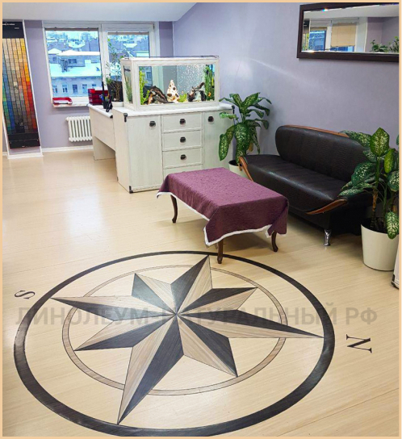
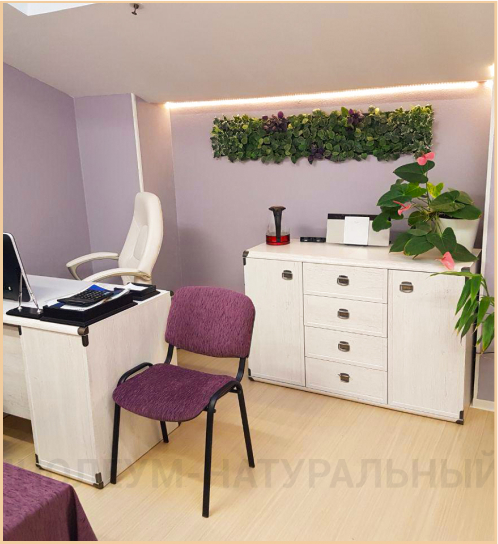
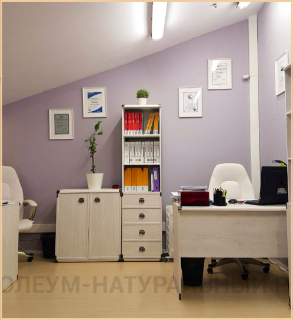
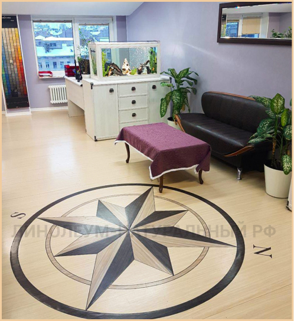
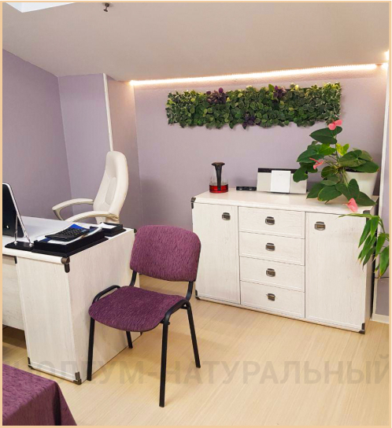
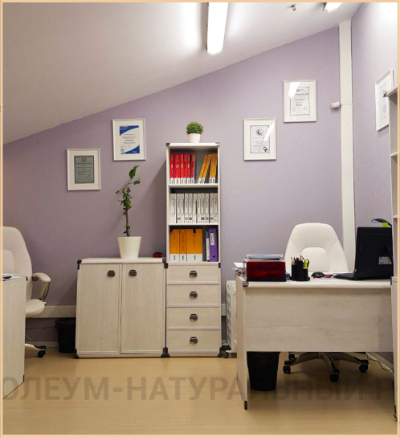

Натуральный линолеум фото в интерьере торгово-строительной компании «Гельстер»
На фото натуральный линолеум в дизайне в офисе торгово-строительной компании «Гельстер». Для своих помещений мы выбрали коллекцию Marmoleum Striato, а наши мастера осуществили укладку натурального линолеума в дизайне (на фото). Рисунок на полу — «роза ветров» — отображает реальное расположение сторон света.
Отпуск или ремонт?
В нашем офисе не было ремонта 7 лет. Но офис не был плох, все было вполне мило и уютно. Светло-зеленые стены настраивали на рабочий лад, темно-коричневая мебель не требовала особого ухода. Вполне рабочая атмосфера.
Но однажды, в конце 2017 года, мы решили все изменить, то есть полностью обновить центральный офис компании в Петербурге.
Оксана Смущенко, финансовый директор:
«Многие наши друзья и знакомые говорили: «Зачем вам делать ремонт? У вас и так все хорошо. Лучше бы в отпуск поехали!».
Кто бы спорил, отпуск — это прекрасно, новые эмоции, впечатления. Но через 2 недели ты вернешься в тот же рабочий кабинет. А вот новый ремонт — это море новых впечатлений и приятных эмоций. Это обновления, которые будут радовать не только нас, но и наших сотрудников еще долгое время.
Наступил 2018 год
Екатерина Поспелова, менеджер по рекламе:
«Я была первой из тех, кто увидел новый офис после ремонта, и он в хорошем смысле меня шокировал. Когда я открыла дверь, я не могла понять, куда попала. Я несколько раз открывала и закрывала дверь, проверяла номер кабинета, и только через пару минут смогла осознать, что произошло».
Евгения Алейникова, менеджер по оптовым продажам:
«Мы работаем в компании, в которой можно ожидать таких приятных сюрпризов.У меня не было шока, но постепенно я все больше и больше впечатлялась произошедшими изменениями. Их осознание происходило на протяжении всего рабочего дня. Мы с коллегами поочередно замечали какие-то детали и обсуждали их почти до самого вечера».
Рождение нового интерьера
Мы решили преподнести ремонт офиса, как новогодний сюрприз для наших сотрудников. Поэтому нам нужно было успеть все за короткие новогодние праздники.
Необходимо было: разобрать и вынести старую мебель, демонтировать старое напольное покрытие, выровнять основание, все заново покрасить и постелить новый пол. Совсем мало времени для такого объема работы. Пришлось приступить к работе 2 января.
Стоило только обновить стены, как все начало меняться, кабинет наполнился светом, чистотой и свежестью. Хотелось как можно скорее увидеть новый пол.
Используемые артикулы коллекции Striato:
Оксана Смущенко:
«Идея дизайна была разработана нами еще год назад, при открытии московского офиса, поэтому долго думать не пришлось. Мы решили сделать все офисы в одном стиле – теперь корпоративном».
Михаил Смущенко, генеральный директор компании:
«Стены мы решили перекрасить в цвет одного из модных оттенков натурального линолеума — Marmoleum Concrete, артикул 3633, а на полу сделать дизайниз натурального линолеума «Розу ветров», чтобы показать все возможности этого уникального покрытия».
Уют в деталях
После установки мебели кабинеты превратились в уютные, светлые и маленькие рабочие островки. Еще один штрих — украшение кабинетов цветами, дипломами и наградами. Цветы не только создают уют в офисе, но и очищают воздух, оптимизируют влажность, убивают вирусы, повышают производительность, влияют на самочувствие.
Оксана Смущенко:
«Когда все было готово, оставалось лишь установить плинтус, собрать мебель и расставить цветы. Оказывается, такая незначительная деталь, как плинтус, играет огромную роль в интерьере! С появлением полоски плинтуса кабинет приобрел завершенность. Я была удивлена этому эффекту!».
Конечный результат и впечатления сотрудников
Александра Большакова, офис-менеджер:
«Изменения в офисе стали настоящим новогодним подарком. Я почувствовала, с какой заботой подходят к нам наши руководители.
Наш офис и до ремонта был вполне уютный. Было много зелени, стояли удобные диваны. Он был выполнен в желто-коричневых тонах и потому ни чем особнно не выделялся. Но лично мне очень хотелось, чтобы он стал похож на наше представительство в Москве, где сиреневые стены прекрасно сочетаются с белой мебелью. Я искренне завидовала москвичам, которые работали в окружении моего любимого цвета. А теперь завидую сама себе».
Андрей Станцель, заместитель генерального директора:
«В нашем офисе определенно стало светлее, появилось больше места. У меня самого появилось больше рабочего пространства, да и ребята из отдела продаж теперь сидят дальше друг от друга и больше не жалуются на шум».
Евгения Алейникова, менеджер по оптовым продажам:
«Когда ты приходишь работать в такой офис, то чувствуешь себя иначе. Хорошее настроение задается с самого утра. Это мотивирует на новые подвиги в работе.
К тому же теперь у нас в офисе вместо старого ковролина лежит натуральный линолеум. По нему приятно ходить босиком, когда никто не видит, да и дышится теперь легче».
Фотографии в интерьере офиса «Гельстер»
 




